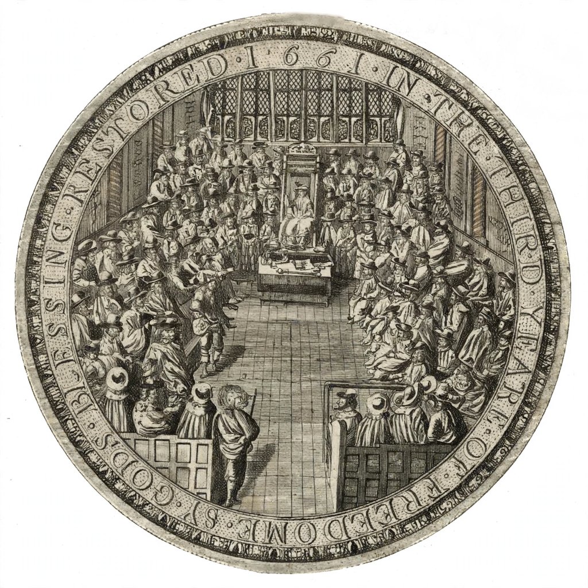

| Commonwealth of England | |
|---|---|
| Period | 1649 – 1653; 1659 – 1660 (republic of England, Scotland and Ireland after 1653 under the Protectorate) |
| Preceded by | Kingdom of England (Charles I) |
| Key event | Execution of Charles I, 30 January 1649 |
| Governing body | Rump Parliament; Council of State |
| Head of state (1653–59) | Oliver Cromwell as Lord Protector |
| Succeeded by | Restoration of Charles II, 1660 |

The Commonwealth of England was the political structure during the period from 1649 to 1660 when England, joined later by Scotland and Ireland, was governed as a republic following the end of the English Civil War and the trial and execution of Charles I. The monarchy was abolished by act of the Rump Parliament in March 1649, and England declared "a Commonwealth and Free State". From 1653 to 1659 the Commonwealth was ruled under the Protectorate of Oliver Cromwell (and briefly his son Richard), exercising power in practice over a united British and Irish state. The republic collapsed amid political instability after Cromwell's death, ending with the Restoration of Charles II in 1660. The period is also known as the Interregnum.
After Pride's Purge (December 1648) removed MPs opposed to trying the king, the remaining "Rump" of the Long Parliament erected a High Court of Justice, which convicted Charles of treason; he was beheaded outside Whitehall on 30 January 1649. The House of Lords and the monarchy were abolished, and executive power vested in a Council of State. The new republic faced royalist remnants in Ireland and Scotland: Cromwell's campaigns in Ireland (1649–50), infamous for the storming of Drogheda and Wexford, and in Scotland, where victories at Dunbar (1650) and Worcester (1651) destroyed Charles II's army, subdued both kingdoms and incorporated them into the Commonwealth. Abroad, the Navigation Act of 1651 targeted Dutch commerce and led to the First Anglo-Dutch War (1652–54), in which the Commonwealth's navy performed strongly under admirals such as Robert Blake. At home, however, the Rump's failure to reform and its members' apparent self-perpetuation alienated the army; on 20 April 1653 Cromwell dissolved it by force.
After the short-lived Nominated Assembly ("Barebone's Parliament"), the army grandees produced England's first written constitution, the Instrument of Government (December 1653), making Cromwell Lord Protector for life with a single-chamber parliament and a council. The regime divided England and Wales into military districts under major-generals in 1655–56, pursued godly reformation, readmitted Jews to England informally, and fought Spain in the Western Design, seizing Jamaica (1655). In 1657 Parliament offered Cromwell the crown under the Humble Petition and Advice; he refused the title but accepted a revised constitution allowing him to nominate his successor. Cromwell died on 3 September 1658 and was succeeded by his son Richard, whose weakness before the army led to his fall in May 1659.
The restored Rump quarrelled with the army, which dissolved it again in October 1659; England slid toward anarchy. General George Monck, commanding in Scotland, marched south, demanded free elections, and stage-managed the return of the monarchy. The Convention Parliament invited Charles II back under the Declaration of Breda, and he entered London on 29 May 1660. The regicides were tried and executed, Cromwell's corpse was exhumed and posthumously executed, and the Commonwealth was treated in law as if it had never existed — though its legacy, in parliamentary sovereignty and republican political thought, endured.